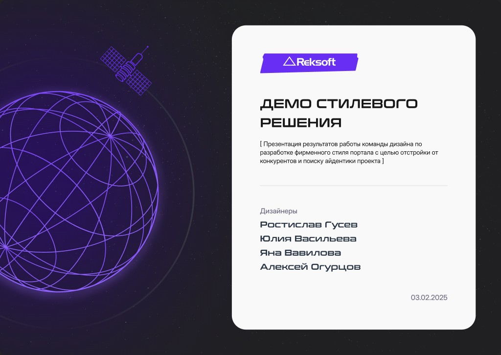
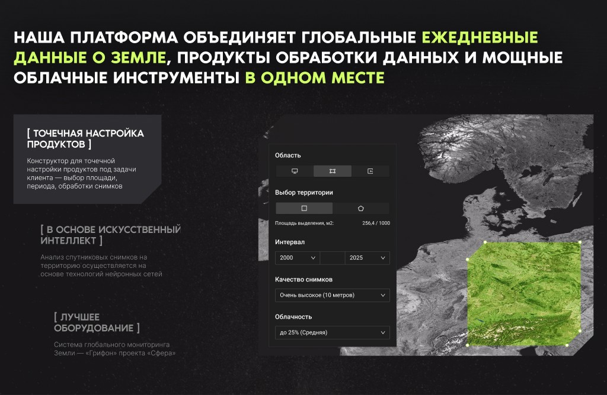
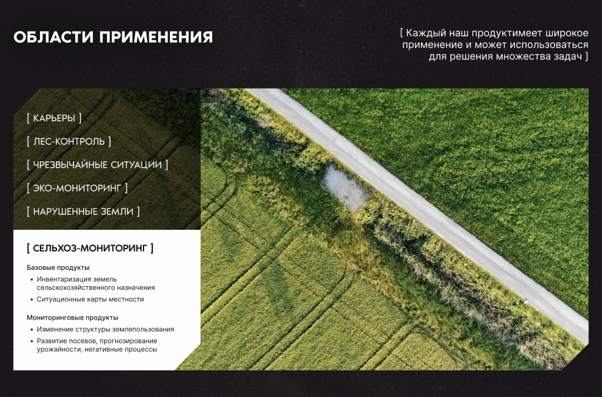
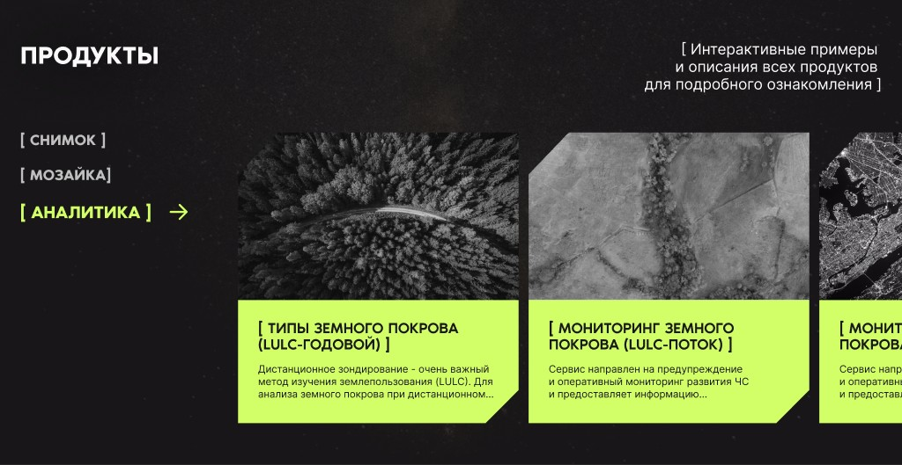
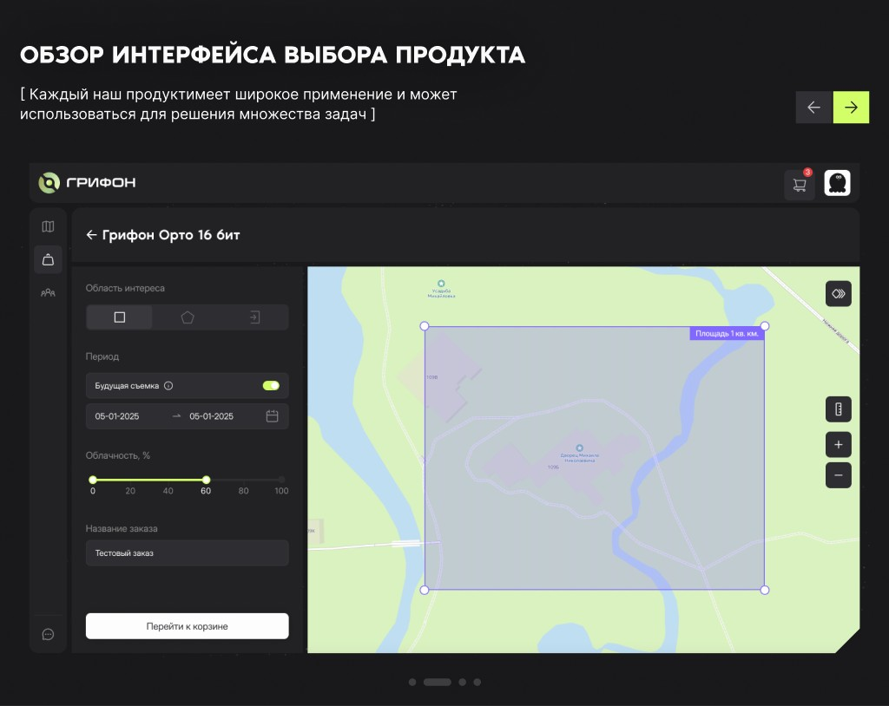
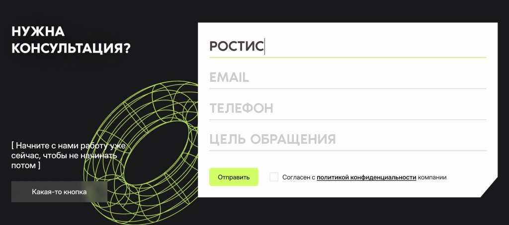

Grifon — Satellite Monitoring Portal
Visual identity and client portal for the “Sfera” global Earth-monitoring system: satellite imagery, mosaics and territory analytics in one place.

Reksoft design team
Space data, in the language of business
Grifon is the client portal of a global Earth-monitoring system. It gives businesses and public-sector customers a daily, high-resolution view of their territories — from individual satellite scenes to ready-made analytical products.
Our team’s brief was to create a visual identity that sets the portal apart from competitors, and to design the client journey — from discovering products to configuring and ordering them on their own.
- [ scenes ]
High-precision satellite images for detailed analysis of the Earth’s surface.
- [ mosaics ]
Seamless, cloud-free coverage of a territory stitched from satellite data.
- [ analytics ]
Ready-made solutions for tracking change, forecasting and managing territories.
The Challenge
Expert product, non-expert buyers- Competitors all look alike — the portal needed a recognisable identity of its own.
- Remote-sensing products (LULC, mosaics, orthoimagery) are hard to explain to clients without a remote-sensing background.
- Ordering involves many parameters: area, period, image quality, cloud cover.
- Different industries — agriculture, forestry, ecology, emergencies — look for different things in the same data.
Key Screens & Flows
Product Constructor
The platform’s core promise — daily global Earth data, processing products and cloud tools in one place. The constructor lets clients tailor a product to their task: draw an area on the map, pick the time range, image quality and acceptable cloud cover — and see the result on the map instantly.

Industry Use Cases
Instead of an abstract catalogue, clients start from their own industry: agriculture, quarries, forestry, emergencies, eco-monitoring, disturbed land. Each tab shows the base and monitoring products that solve that industry’s tasks.

Product Catalogue
Products are grouped by type — scene, mosaic, analytics — with interactive examples and descriptions. A horizontal strip of cards with textured satellite previews makes products easy to compare, and each card leads straight to the map with that product preselected.

Map-based Ordering
The product-selection interface: clients outline an area of interest with a rectangle, a polygon or an uploaded file, set the period and cloud cover, name the order and add it to the cart. The selected area is shown right on the map, so the scope of the order is clear before checkout.

Space, data and precision
A deep dark background like the night sky, an acid-green accent that highlights data on the map, dense uppercase type and signature square brackets that “select” key messages — just like an area of interest on a satellite image.
Palette
- #19191BBackground
- #222225Surfaces
- #D2FF68Accent
- #B8ED3EFocus
- #FAFAFAText
- #8C8C8CSecondary
Typography
The bracket device
[ A constant, detailed, high-resolution view of the Earth — every day ]

Want to learn more about this project or discuss a collaboration?
Get in touchLet's stay in touch!
I'm always open to new projects, long-term collaborations, and exciting ideas. Feel free to reach out through any channel.